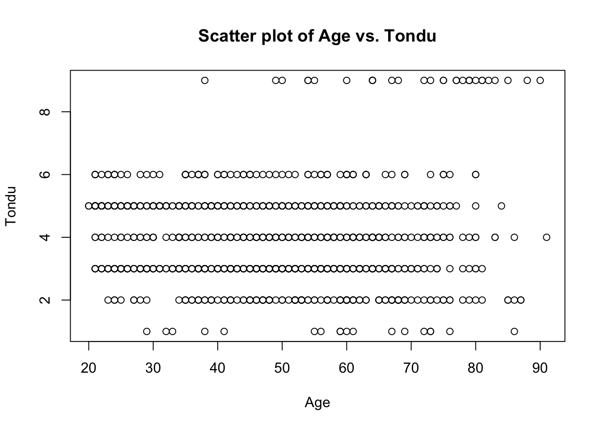
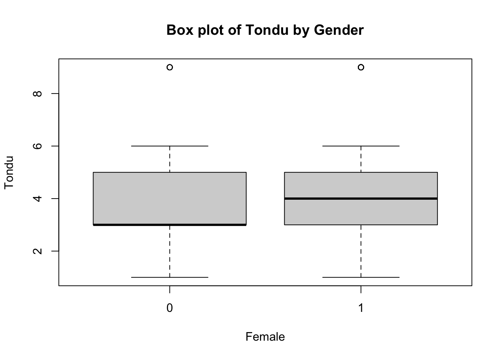
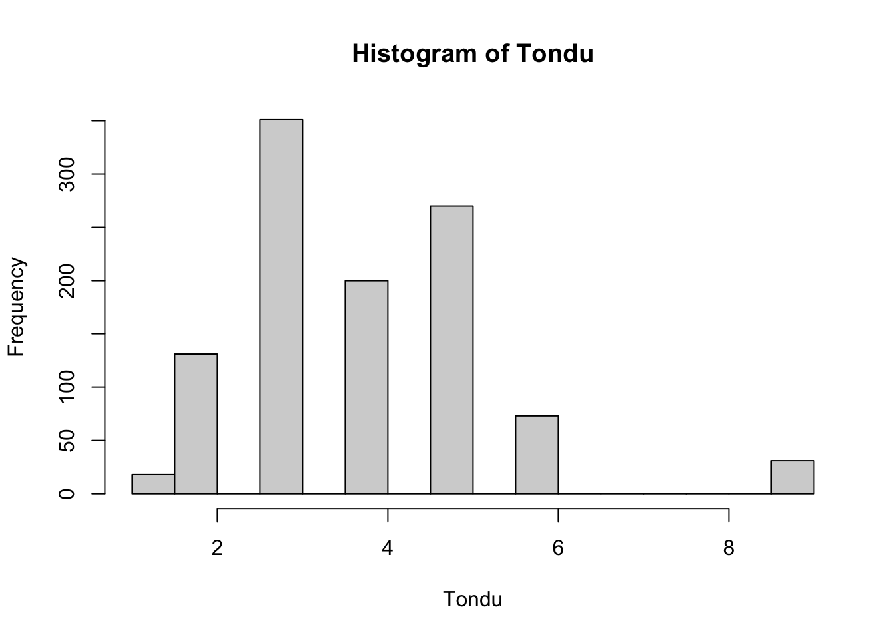
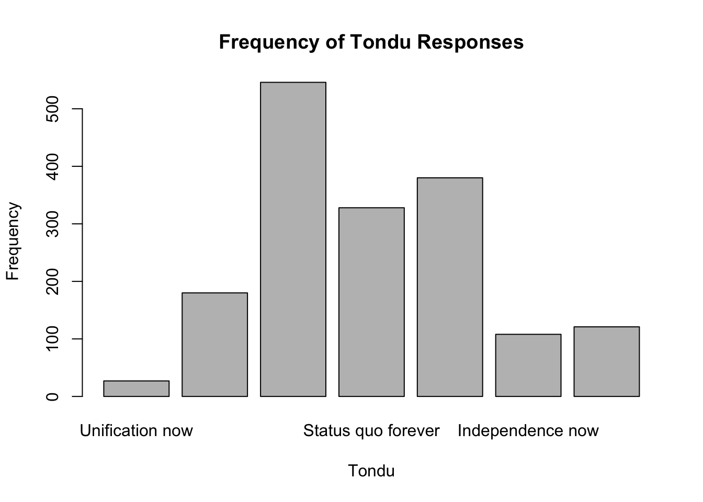

library(haven)
TEDS_2016 <- read_stata("https://github.com/datageneration/home/blob/master/DataProgramming/data/TEDS_2016.dta?raw=true")
View(TEDS_2016)Assignment 2
Load the Data:
Remove observations with any missing values
TEDS_2016_clean <- na.omit(TEDS_2016)Descriptive Statistics
summary(TEDS_2016_clean) # Summary statistics for all variables # If you want to see summary statistics for specific variables, you can specify them: summary(TEDS_2016_clean[c("Tondu", "age", "income", "edu")]) District Sex Age Edu Arear
Min. : 201 Min. :1.000 Min. :1.000 Min. :1.000 Min. :1.000
1st Qu.:1701 1st Qu.:1.000 1st Qu.:2.000 1st Qu.:2.000 1st Qu.:1.000
Median :6406 Median :1.000 Median :3.000 Median :3.000 Median :2.000
Mean :4810 Mean :1.484 Mean :3.283 Mean :3.429 Mean :2.667
3rd Qu.:6603 3rd Qu.:2.000 3rd Qu.:5.000 3rd Qu.:5.000 3rd Qu.:4.000
Max. :6806 Max. :2.000 Max. :5.000 Max. :5.000 Max. :6.000
Career Career8 Ethnic Party
Min. :1.000 Min. :1.000 Min. :1.000 Min. : 1.00
1st Qu.:1.000 1st Qu.:2.000 1st Qu.:1.000 1st Qu.: 4.00
Median :2.000 Median :3.000 Median :1.000 Median : 6.00
Mean :2.547 Mean :3.614 Mean :1.535 Mean :10.75
3rd Qu.:4.000 3rd Qu.:4.000 3rd Qu.:2.000 3rd Qu.:25.00
Max. :5.000 Max. :8.000 Max. :9.000 Max. :26.00
PartyID Tondu Tondu3 nI2
Min. :1.000 Min. :1.000 Min. :1.000 Min. : 1.00
1st Qu.:1.000 1st Qu.:3.000 1st Qu.:2.000 1st Qu.: 1.00
Median :2.000 Median :4.000 Median :2.000 Median : 2.00
Mean :3.693 Mean :3.911 Mean :2.383 Mean :30.76
3rd Qu.:9.000 3rd Qu.:5.000 3rd Qu.:3.000 3rd Qu.:98.00
Max. :9.000 Max. :9.000 Max. :9.000 Max. :98.00
votetsai green votetsai_nm votetsai_all
Min. :0.0000 Min. :0.0000 Min. :0.0000 Min. :0.0000
1st Qu.:0.0000 1st Qu.:0.0000 1st Qu.:0.0000 1st Qu.:0.0000
Median :1.0000 Median :0.0000 Median :1.0000 Median :1.0000
Mean :0.6108 Mean :0.4507 Mean :0.6108 Mean :0.6108
3rd Qu.:1.0000 3rd Qu.:1.0000 3rd Qu.:1.0000 3rd Qu.:1.0000
Max. :1.0000 Max. :1.0000 Max. :1.0000 Max. :1.0000
Independence Unification sq Taiwanese
Min. :0.0000 Min. :0.0000 Min. :0.000 Min. :0.0000
1st Qu.:0.0000 1st Qu.:0.0000 1st Qu.:0.000 1st Qu.:0.0000
Median :0.0000 Median :0.0000 Median :1.000 Median :1.0000
Mean :0.3194 Mean :0.1387 Mean :0.513 Mean :0.6341
3rd Qu.:1.0000 3rd Qu.:0.0000 3rd Qu.:1.000 3rd Qu.:1.0000
Max. :1.0000 Max. :1.0000 Max. :1.000 Max. :1.0000
edu female whitecollar lowincome
Min. :1.000 Min. :0.0000 Min. :0.0000 Min. :1.00
1st Qu.:2.000 1st Qu.:0.0000 1st Qu.:0.0000 1st Qu.:4.00
Median :3.000 Median :0.0000 Median :1.0000 Median :5.00
Mean :3.429 Mean :0.4842 Mean :0.5791 Mean :4.35
3rd Qu.:5.000 3rd Qu.:1.0000 3rd Qu.:1.0000 3rd Qu.:5.00
Max. :5.000 Max. :1.0000 Max. :1.0000 Max. :5.00
income income_nm age KMT
Min. : 1.00 Min. : 1.00 Min. :20.00 Min. :0.0000
1st Qu.: 3.00 1st Qu.: 3.00 1st Qu.:36.25 1st Qu.:0.0000
Median : 5.00 Median : 5.00 Median :49.00 Median :0.0000
Mean : 5.32 Mean : 5.32 Mean :48.65 Mean :0.2682
3rd Qu.: 8.00 3rd Qu.: 8.00 3rd Qu.:60.00 3rd Qu.:1.0000
Max. :10.00 Max. :10.00 Max. :91.00 Max. :1.0000
DPP npp noparty pfp
Min. :0.0000 Min. :0.00000 Min. :0.0000 Min. :0.00000
1st Qu.:0.0000 1st Qu.:0.00000 1st Qu.:0.0000 1st Qu.:0.00000
Median :0.0000 Median :0.00000 Median :0.0000 Median :0.00000
Mean :0.4199 Mean :0.02793 Mean :0.2561 Mean :0.02328
3rd Qu.:1.0000 3rd Qu.:0.00000 3rd Qu.:1.0000 3rd Qu.:0.00000
Max. :1.0000 Max. :1.00000 Max. :1.0000 Max. :1.00000
South north Minnan_father Mainland_father
Min. :0.0000 Min. :0.0000 Min. :0.0000 Min. :0.000
1st Qu.:0.0000 1st Qu.:0.0000 1st Qu.:0.0000 1st Qu.:0.000
Median :0.0000 Median :1.0000 Median :1.0000 Median :0.000
Mean :0.4609 Mean :0.5149 Mean :0.7225 Mean :0.108
3rd Qu.:1.0000 3rd Qu.:1.0000 3rd Qu.:1.0000 3rd Qu.:0.000
Max. :1.0000 Max. :1.0000 Max. :1.0000 Max. :1.000
Econ_worse Inequality inequality5 econworse5
Min. :0.0000 Min. :0.0000 Min. :1.000 Min. :1.000
1st Qu.:0.0000 1st Qu.:1.0000 1st Qu.:4.000 1st Qu.:3.000
Median :1.0000 Median :1.0000 Median :5.000 Median :4.000
Mean :0.5801 Mean :0.9479 Mean :4.516 Mean :3.683
3rd Qu.:1.0000 3rd Qu.:1.0000 3rd Qu.:5.000 3rd Qu.:4.000
Max. :1.0000 Max. :1.0000 Max. :5.000 Max. :5.000
Govt_for_public pubwelf5 Govt_dont_care highincome
Min. :0.0000 Min. :1.000 Min. :0.0000 Min. :0.0000
1st Qu.:0.0000 1st Qu.:2.000 1st Qu.:0.0000 1st Qu.:0.0000
Median :0.0000 Median :2.000 Median :1.0000 Median :1.0000
Mean :0.4423 Mean :2.879 Mean :0.5168 Mean :0.5866
3rd Qu.:1.0000 3rd Qu.:4.000 3rd Qu.:1.0000 3rd Qu.:1.0000
Max. :1.0000 Max. :5.000 Max. :1.0000 Max. :1.0000
votekmt votekmt_nm Blue Green No_Party
Min. :0.0000 Min. :0.0000 Min. :0 Min. :0 Min. :0
1st Qu.:0.0000 1st Qu.:0.0000 1st Qu.:0 1st Qu.:0 1st Qu.:0
Median :0.0000 Median :0.0000 Median :0 Median :0 Median :0
Mean :0.2858 Mean :0.2858 Mean :0 Mean :0 Mean :0
3rd Qu.:1.0000 3rd Qu.:1.0000 3rd Qu.:0 3rd Qu.:0 3rd Qu.:0
Max. :1.0000 Max. :1.0000 Max. :0 Max. :0 Max. :0
voteblue voteblue_nm votedpp_1 votekmt_1
Min. :0.0000 Min. :0.0000 Min. :0.0000 Min. :0.0000
1st Qu.:0.0000 1st Qu.:0.0000 1st Qu.:0.0000 1st Qu.:0.0000
Median :0.0000 Median :0.0000 Median :1.0000 Median :0.0000
Mean :0.3892 Mean :0.3892 Mean :0.6108 Mean :0.2858
3rd Qu.:1.0000 3rd Qu.:1.0000 3rd Qu.:1.0000 3rd Qu.:1.0000
Max. :1.0000 Max. :1.0000 Max. :1.0000 Max. :1.0000 Correlation Analysis
correlation_matrix <- cor(TEDS_2016_clean[c("Tondu", "age", "income", "edu")])
correlation_matrix Tondu age income edu
Tondu 1.000000000 0.004867868 -0.1141681 -0.1121728
age 0.004867868 1.000000000 -0.2286319 -0.6227109
income -0.114168090 -0.228631866 1.0000000 0.4009666
edu -0.112172833 -0.622710890 0.4009666 1.0000000Scatter plots
plot(TEDS_2016_clean$age, TEDS_2016_clean$Tondu, xlab = "Age", ylab = "Tondu", main = "Scatter plot of Age vs. Tondu")
Box plots
boxplot(Tondu ~ female, data = TEDS_2016_clean, xlab = "Female", ylab = "Tondu", main = "Box plot of Tondu by Gender")
Histograms/Density plots
hist(TEDS_2016_clean$Tondu, xlab = "Tondu", main = "Histogram of Tondu") 
Linear Regression (assuming Tondu is continuous)
lm_model <- lm(Tondu ~ age + income + edu, data = TEDS_2016_clean)
summary(lm_model)
Call:
lm(formula = Tondu ~ age + income + edu, data = TEDS_2016_clean)
Residuals:
Min 1Q Median 3Q Max
-3.4412 -0.9922 -0.1693 1.0557 5.4566
Coefficients:
Estimate Std. Error t value Pr(>|t|)
(Intercept) 5.094224 0.285689 17.831 < 2e-16 ***
age -0.009692 0.003618 -2.679 0.007504 **
income -0.039048 0.016122 -2.422 0.015598 *
edu -0.147058 0.041733 -3.524 0.000443 ***
---
Signif. codes: 0 '***' 0.001 '**' 0.01 '*' 0.05 '.' 0.1 ' ' 1
Residual standard error: 1.468 on 1070 degrees of freedom
Multiple R-squared: 0.02483, Adjusted R-squared: 0.02209
F-statistic: 9.08 on 3 and 1070 DF, p-value: 6.141e-06unique(TEDS_2016_clean$Tondu)<labelled<double>[7]>: Position on unification and independence
[1] 5 3 4 9 6 1 2
Labels:
value label
1 Immediate unification
2 Maintain the status quo,move toward unification
3 Maintain the status quo, decide either unification or independence
4 Maintain the status quo forever
5 Maintain the status quo,move toward independence
6 Immediate independence
9 Nonresponse# Convert Tondu to factor
TEDS_2016_clean$Tondu <- factor(TEDS_2016_clean$Tondu)
# Recode Tondu based on the levels
TEDS_2016_clean$Tondu <- ifelse(TEDS_2016_clean$Tondu == "Status quo", 0,
ifelse(TEDS_2016_clean$Tondu == "Independence now", 1, NA))
class(TEDS_2016_clean$Tondu)[1] "logical"Rerun the analysis for the votetsai variable
Descriptive Statistics
summary(TEDS_2016_clean$votetsai) Min. 1st Qu. Median Mean 3rd Qu. Max.
0.0000 0.0000 1.0000 0.6108 1.0000 1.0000 Correlation Analysis
correlation_matrix_votetsai <- cor(TEDS_2016_clean[c("votetsai", "age", "income", "edu")])
print(correlation_matrix_votetsai) votetsai age income edu
votetsai 1.00000000 -0.07362609 -0.05985151 -0.05050798
age -0.07362609 1.00000000 -0.22863187 -0.62271089
income -0.05985151 -0.22863187 1.00000000 0.40096662
edu -0.05050798 -0.62271089 0.40096662 1.00000000Regression Analysis: Linear Regression:
lm_model_votetsai <- lm(votetsai ~ age + income + edu, data = TEDS_2016_clean)
summary(lm_model_votetsai)
Call:
lm(formula = votetsai ~ age + income + edu, data = TEDS_2016_clean)
Residuals:
Min 1Q Median 3Q Max
-0.7911 -0.5717 0.3226 0.3896 0.6100
Coefficients:
Estimate Std. Error t value Pr(>|t|)
(Intercept) 1.062065 0.093989 11.300 < 2e-16 ***
age -0.005240 0.001190 -4.402 1.18e-05 ***
income -0.006895 0.005304 -1.300 0.193893
edu -0.046548 0.013730 -3.390 0.000724 ***
---
Signif. codes: 0 '***' 0.001 '**' 0.01 '*' 0.05 '.' 0.1 ' ' 1
Residual standard error: 0.483 on 1070 degrees of freedom
Multiple R-squared: 0.02213, Adjusted R-squared: 0.01939
F-statistic: 8.072 on 3 and 1070 DF, p-value: 2.551e-05Logistic Regression:
logit_model_votetsai <- glm(votetsai ~ age + income + edu, data = TEDS_2016_clean, family = binomial)
summary(logit_model_votetsai)
Call:
glm(formula = votetsai ~ age + income + edu, family = binomial,
data = TEDS_2016_clean)
Deviance Residuals:
Min 1Q Median 3Q Max
-1.7225 -1.3042 0.8823 0.9898 1.3862
Coefficients:
Estimate Std. Error z value Pr(>|z|)
(Intercept) 2.377646 0.411340 5.780 7.46e-09 ***
age -0.022262 0.005153 -4.320 1.56e-05 ***
income -0.029579 0.022694 -1.303 0.192436
edu -0.197429 0.059136 -3.339 0.000842 ***
---
Signif. codes: 0 '***' 0.001 '**' 0.01 '*' 0.05 '.' 0.1 ' ' 1
(Dispersion parameter for binomial family taken to be 1)
Null deviance: 1435.7 on 1073 degrees of freedom
Residual deviance: 1411.9 on 1070 degrees of freedom
AIC: 1419.9
Number of Fisher Scoring iterations: 4Generate A Frequency Table:
# Assigning labels to the Tondu variable
TEDS_2016$Tondu <- factor(TEDS_2016$Tondu, labels = c("Unification now", "Status quo, unif. in future", "Status quo, decide later", "Status quo forever", "Status quo, indep. in future", "Independence now", "No response"))
# Generating frequency table
frequency_table <- table(TEDS_2016$Tondu)
print(frequency_table)
Unification now Status quo, unif. in future
27 180
Status quo, decide later Status quo forever
546 328
Status quo, indep. in future Independence now
380 108
No response
121 # Generating barchart
barplot(frequency_table, main = "Frequency of Tondu Responses", xlab = "Tondu", ylab = "Frequency")